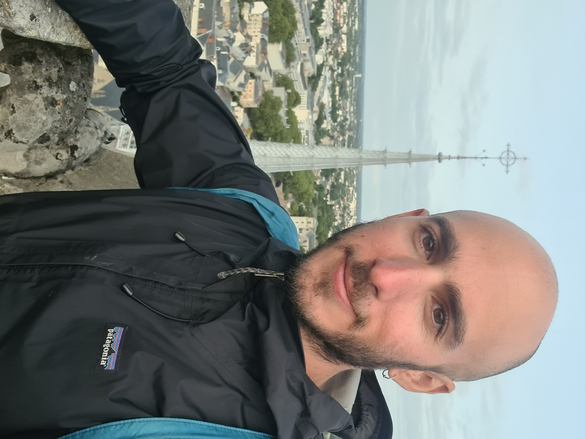
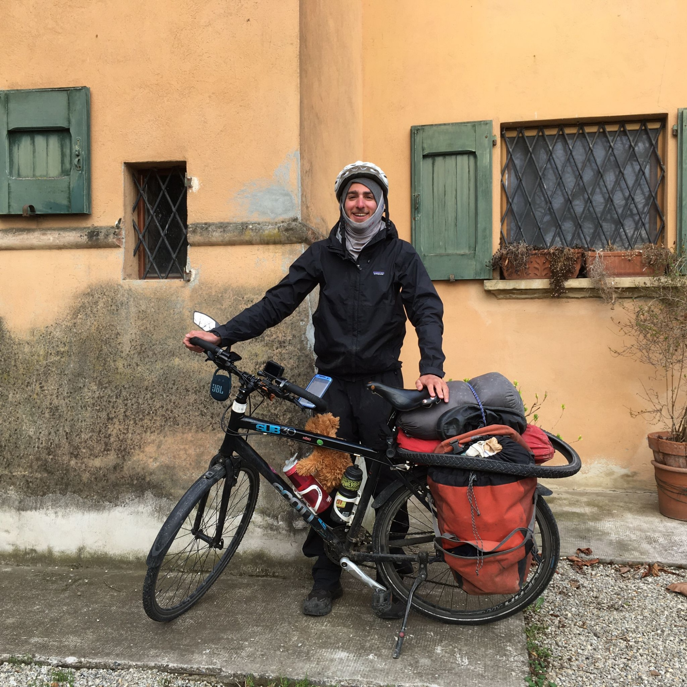

1
Un constat simple
Beaucoup de vélos sont trop peu utilisés, parfois seulement quelques jours par an. Pourtant, ils pourraient rendre service à des voyageurs, des étudiants, des habitants ou des personnes de passage.

LokaVélo part d’un constat tout simple : beaucoup de vélos dorment dans un coin, alors qu’ils pourraient rendre service à quelqu’un, le temps d’un trajet, d’une balade ou d’un voyage.
Développeur Android, voyageur à vélo et amoureux des projets simples, humains et utiles.

Je m’appelle Arno, j’ai 32 ans, et j’ai développé LokaVélo avec l’envie de créer une application utile, humaine, et alignée avec mes valeurs : l’écologie, le partage et l’économie circulaire.
Mon histoire avec le vélo a vraiment commencé en 2018, quand j’ai ressorti de la cave mon vieux VTT d’ado pour pédaler dans Marseille. Et là, petit déclic : ce sentiment de liberté, le vent sur le visage, la ville qui devient soudain plus grande et plus accessible… j’ai tout de suite accroché.
En 2020, je fais mon premier voyage à vélo entre Lausanne et Marseille. Ce trajet m’a donné un avant-goût du cyclotourisme, avec cette impression assez magique d’avancer à la seule force des jambes, sacoches accrochées et curiosité en bandoulière.
Puis, durant l’été 2021, je pars pour un périple à vélo qui durera 8 mois, à travers l’Europe et la Scandinavie. Huit mois de routes, de rencontres, de bivouacs, de détours, de jambes fatiguées et de grands sourires idiots devant des paysages beaucoup trop beaux.
Aujourd’hui, j’en suis convaincu : le vélo est un moyen de transport pratique, économique, bon pour la santé, écologique et accessible à beaucoup de monde. C’est simple, joyeux, efficace, et ça remet un peu d’air dans le quotidien.
L’idée de LokaVélo m’est venue après avoir mis mon véhicule en location. Je me suis demandé : pourquoi ne pas imaginer la même chose pour les vélos ? Beaucoup dorment dans des caves, des garages ou des appartements, alors qu’ils pourraient rendre service à quelqu’un, le temps d’une balade, d’un trajet ou d’un voyage.
Parce qu’un vélo inutilisé peut devenir une solution de mobilité pour quelqu’un d’autre.
Beaucoup de vélos sont trop peu utilisés, parfois seulement quelques jours par an. Pourtant, ils pourraient rendre service à des voyageurs, des étudiants, des habitants ou des personnes de passage.
Louer un vélo entre particuliers demande de la clarté : paiement sécurisé, caution par empreinte bancaire, état des lieux d’entrée et de sortie, messagerie et règles compréhensibles.
LokaVélo rassemble ces éléments dans une application Android pensée pour rendre la location plus simple, plus rassurante et plus locale.
Trouver un vélo autour de soi, sans passer par une grande flotte impersonnelle.
Une annonce claire, une demande de location, un paiement sécurisé et un état des lieux guidé.
Faire circuler les vélos déjà existants plutôt que les laisser dormir dans un coin.
LokaVélo démarre simplement, avec l’objectif de s’améliorer étape par étape grâce aux retours des utilisateurs.
L’objectif est de renforcer progressivement les outils de confiance : profils plus complets, meilleurs signalements, informations plus claires et accompagnement en cas de problème.
À terme, j’aimerais négocier une solution d’assurance adaptée aux locations entre particuliers, directement intégrée à la plateforme.
Les premières utilisations permettront d’identifier ce qui doit être simplifié, clarifié ou amélioré. LokaVélo est pensé comme un projet vivant, pas comme un bloc de béton numérique.
L’ambition est de créer un réseau local de propriétaires et de locataires, ville après ville, en gardant une approche humaine et responsable.
Une idée, un retour ou une question sur le projet ? Contacte-moi !